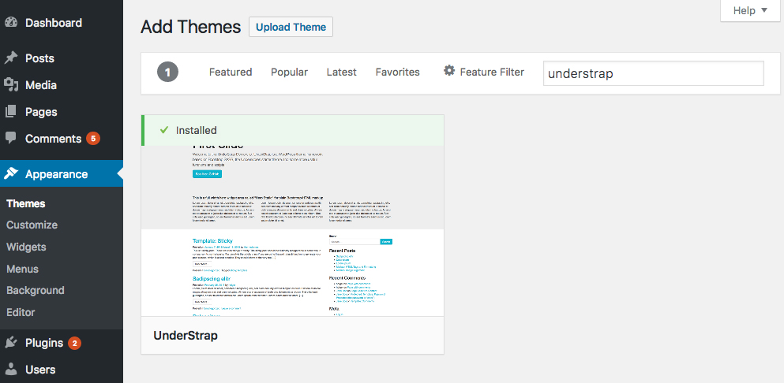

Warning! This docs are under development. They are public but not ready to read yet!
About UnderStrap
UnderStrap is a WordPress theme framework. It based on Bootstrap 4 and the starter theme Underscores. All glued together by npm, Gulp and Sass.
You can use it as starter theme itself and build your own design theme on top of it. Or you use it as parent theme framework and create your own child theme for UnderStrap. At the moment, UnderStrap is in a very early stage. But if you want, feel free to use it for your own WordPress theme!
Changelog & Release Infos
Stable release:  | Dependencies:
| Dependencies: 
Installation
There are two (common) ways to install UnderStrap: Via WordPress theme installer or manually via ZIP upload.
1. Installation via WordPress theme installer
UnderStrap is available via wordpress.org. Means you can install it from your WordPress backend as any other theme, too.

Click on Appearance -> Themes in your WordPress backend, hit the "Add New" button and search for "UnderStrap". Hit the "install" button and wait a moment. UnderStrap will be installed on your server.
Now activate UnderStrap. Go again to Appearance -> Themes and hit the "Activate" button below the UnderStrap screenshot.
2. Installation via Upload
UnderStrap is available as .zip archive at UnderStrap.com. Download it and store it on your local HDD.
Open your WordPress backend and click on Appearance -> Themes, hit the "Add New" button followed by the "Upload Theme" button.
Select the previously stored .zip file from your HDD and upload it. The WordPres install routine will run automatically right after it.
3. Manually via SFTP
Follow step 2 but extract the freshly downloaded understrap.zip file on your local HDD. Now connect via SFTP to your server, browse to the /wp-content/themes directory of your WordPress installation and upload the /understrap folder to it.
4. Install via npm
Open your terminal and browse to the location where you want to install UnderStrap:
cd path/to/location/
If needed create the proper folder:
mkdir understrap
Now install everything you need with:
npm install understrap
Developing with npm & Gulp
UnderStrap uses npm as manager for dependency packages like Bootstrap and Underscores. And it uses Gulp as taskrunner, for example to compile .scss code into .css, minify .js code etc. The following chapter describes the usage and workflow.
Installing dependencies
- Make sure you have installed Node.js and Browser-Sync* (* optional, if you wanna use it) on your computer globally
- Then open your terminal and browse to the location of your UnderStrap copy
- Run:
$ npm install
Running
To work and compile your Sass files on the fly start:
Or, to run with Browser-Sync:
- First change the browser-sync options to reflect your environment in the file
/gulpfile.js in the beginning of the file:
var browserSyncOptions = {
proxy: "localhost/theme_test/", // <----- CHANGE HERE
notify: false
};
- Replace
localhost/theme_test/ with the URL to your local WordPress test environment.
For example if you run MAMP and your WordPress installation is placed in a htdocs subfolder called /understrap you have to add localhost:8888/understrap. Its the same URL you have to type in to see your local WordPress installation.
- then run:
$ gulp watch-bs
A more detailed example of working with SCSS - Npm - Gulp
This little how to is for Linux - OS X users how currently know how to clone the project from Github. If not check this tutorial here. Assumptions: you have cloned project's source and you want to start styling various parts of the theme. Additionally you have Node.js installed on your system, if not check here how to do it.
- Go to project's root directory
- Install project's toolchain and dependencies by typing npm install. When this command completes, you should be able to see a new directory named
node_modules under project's root directory (understrap/node_modules)
- Move various needed libraries from
node_modules where installed with npm install to project's root directory by typing gulp copy-assets. When this command complete, you should be able to see a new directory named src under project's root directory (understrap/src).
We the above prerequisites complete, you are now ready to start developing - styling your copy of Understrap. For this guide, we will do the following:
- create a SCSS variable
- see how to nest style rules
- use the variable to change navbar's link colors
- see how to reference parent selector while nesting rules to handle a hover event
Running the watcher
First we must run the watcher process which is responsible to track file changes and compile these changes to the final CSS file which in turn WordPress loads. From the terminal and while in project root directory type gulp watch. You should see something like the following:
stef@dev:understrap$ gulp watch
[13:06:47] Using gulpfile ~/projects/php/wordpress/wp-content/themes/understrap/gulpfile.js
[13:06:47] Starting 'watch'...
[13:06:47] Finished 'watch' after 12 ms
leave the terminal open with the command running as is.
Styling the theme
With the watcher running, open the SCSS file understrap/sass/theme/_theme.scss and paste the following, (you should also read the code comments):
// SCSS Syntax http://sass-lang.com/documentation/file.SASS_REFERENCE.html#css_extensions
// variable declaration in SCSS we use variables to keep style clean and easy to modify
// if we use this variable to say 50 rules and want to change the color, we would change only this variable.
$mycolor: #67A6A6;
// in SCSS we nest
nav {
// in CSS this was selected by nav a
a {
color: $mycolor !important;
// change a on hover example
// in CSS this was selected by nav a:hover
&:hover {
color: $brand-primary !important;
}
}
}
by saving the file you should see in terminal something like the following:
[13:15:22] Starting 'sass'...
[13:15:22] Finished 'sass' after 1.36 ms
[13:15:22] Starting 'cleancss'...
[13:15:22] Finished 'cleancss' after 2.81 ms
[13:15:22] Starting 'cssnano'...
[13:15:23] Finished 'cssnano' after 737 ms
reload the page and you should be able to see the new style applied.
License
UnderStrap is released under the terms of the GPL version 2 or (at your option) any later version.
http://www.gnu.org/licenses/old-licenses/gpl-2.0.en.html
Credits